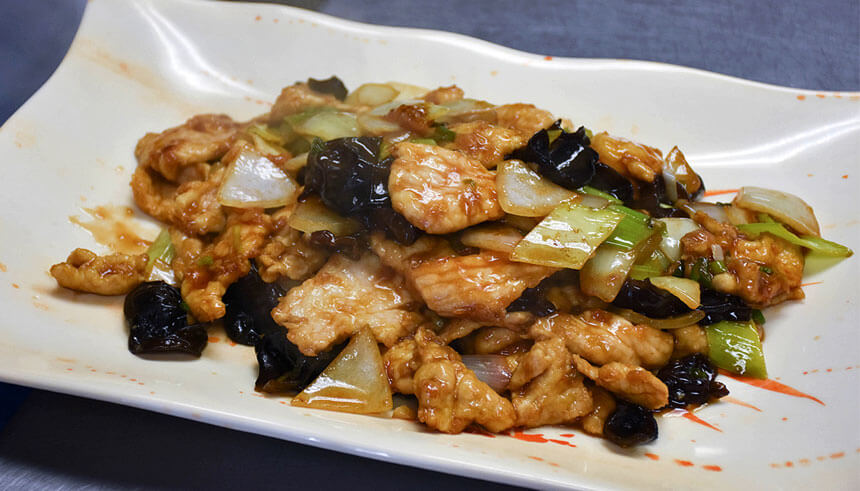

Fried Boiled Pork

Description
Fried boiled pork, one of the most famous offerings in traditional Shanxi cuisine, originated during the Southern and Northern Dynasties (420-581) among the aristocrats in the southern Shanxi city of Linfen.
The dish has a bright golden color as well as a tender texture. It is salty, fresh and has sour taste.
Ingredients
- 1 lb pork loin, cut into quarter-sized strips
- 1/4 cup onions
- 1/4 cup garlic shoots
- 1/2 inch knob of ginger, finely sliced
- 1/2 cup rehydrated wood ear mushrooms
- 5 tbsp black vinegar
- 2 tbsp soy sauce
- 2 tsp dark soy sauce
- 1/2 tbsp of sweet potato starch
- Canola oil
- Water
- 1 tbsp salt
- 4 tbsp Shaoxing wine
- 1 egg yolk
- 3 tbsp sweet potato starch
Directions
- Marinade the pork loin strips in the marinade sauce.
- Massage the meat until it is tender.
- Heat a wok on high fire. When the wok is hot, add about 2 cups of canola oil. Wait until it hits about 350°F.
- Briefly sauté the pork loin for just a couple of minutes. Note: this is not a deep fry dish, the pork should be gently cooked in the oil and taken out before it gets crispy.
- Scoop out the pork and drain the oil on a sieve.
- Empty the wok of excess oil, add about 1 tbsp of canola oil. Turn up heat to medium.
- Throw in the onions, garlic shoots, and ginger and sauté briefly until you can smell the aromatics.
- Add in the pork, wood ear mushrooms, 4 tbsp of black vinegar, 2 tbsp of soy sauce, and 2 tsp of dark soy sauce.
- In a separate small bowl, mix 1/2 tbsp of sweet potato starch with 1 tbsp of water. Then add it to the wok.
- Add about 1/4 cup of water. Adjust accordingly, depending on how dry the stir fry is.
- Turn off the heat. Add 1 tbsp of black vinegar.
- Serve by itself or over noodles.
Credit
Home